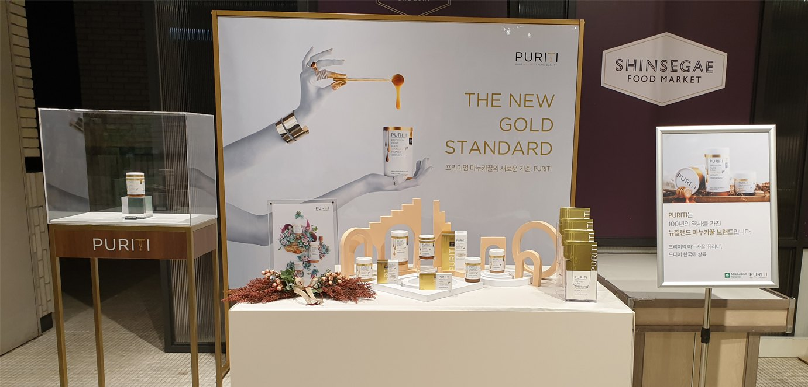

Portfolio — Yeon's Design
뷰티 브랜드의 접점을 디자인합니다.
상세페이지와 기획전, SNS 이미지부터 인쇄물과 VMD까지 — 코스메틱 브랜드가 고객을 만나는 온라인·오프라인의 모든 접점을 직접 기획하고 디자인합니다.

About
제품의 설득력을 화면과 인쇄물 위에
정확하게 옮기는 일을 합니다.
뷰티·코스메틱 브랜드의 이커머스 디자인을 중심으로, 온라인 상세페이지와 기획전, SNS 콘텐츠부터 오프라인 인쇄물과 매장 VMD까지 폭넓게 작업해 왔습니다.
화장품의 효능과 사용감을 짧은 시간 안에 전달해야 하는 카테고리의 특성을 살려, 제품 컷과 카피, 정보 구조를 한 흐름으로 정리하는 것을 중심에 둡니다. 기획부터 아트워크 마감까지 직접 참여해 브랜드의 톤이 채널마다 흔들리지 않도록 맞춥니다.
Beauty / Cosmetic E-commerce & VMD
Selected Work
작업물 28 / 28
WEB 18 · BRAND 10